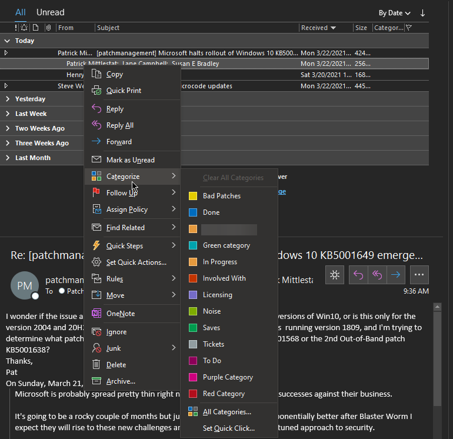
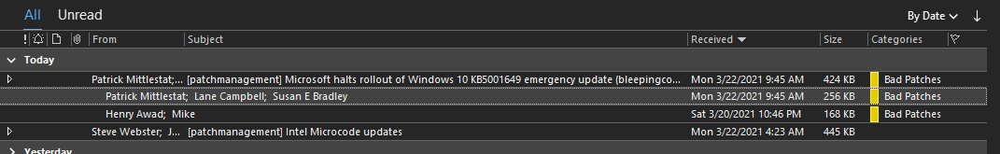
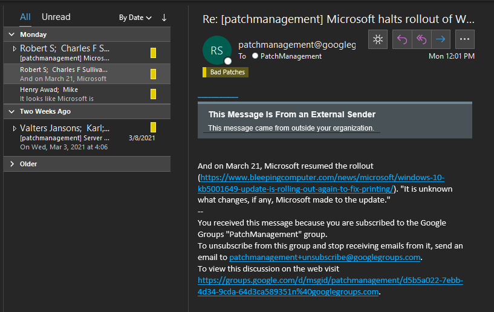
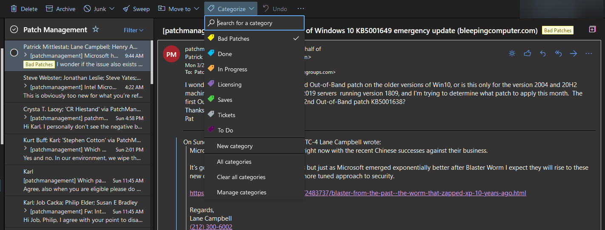
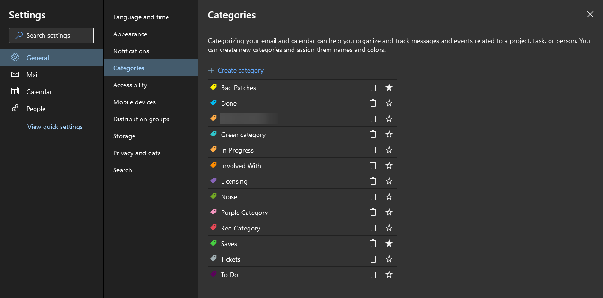
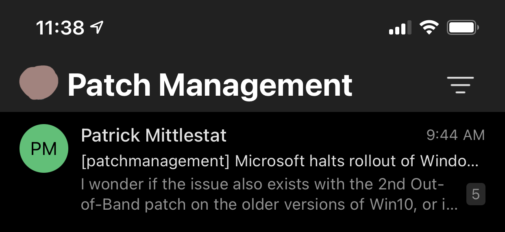
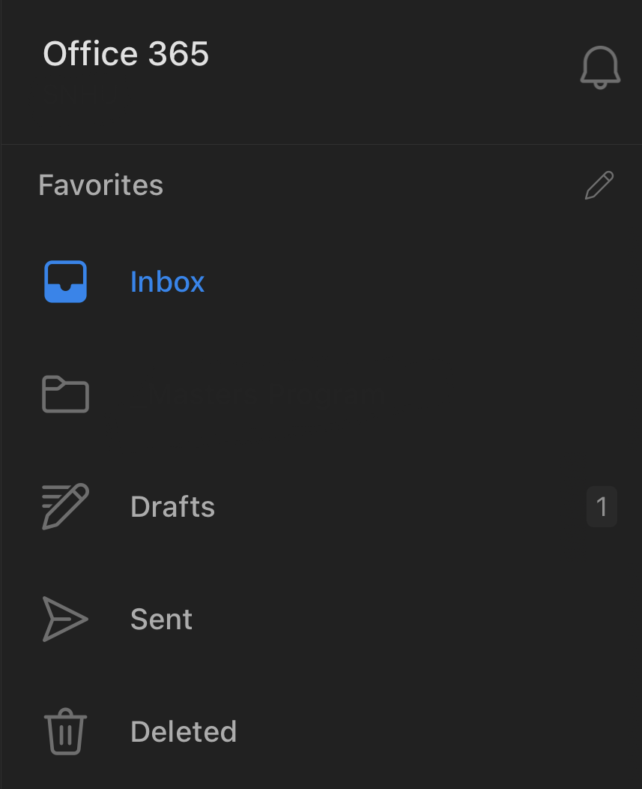
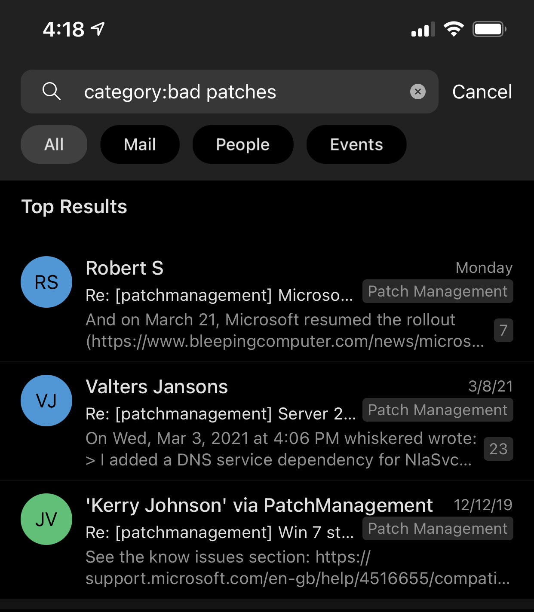

Categories: That time Microsoft almost fixed inbox clutter
Author: Steve
Email organization is a touchy subject for me, where I take issue with only ever being able to drop an email into a folder. In practicality, I seldom find a use case where an email falls into a single solitary category, warranting membership to its own folder. There may be times when an email from say, 2011 belongs in a category of "2010s," "2011," and "Never Delete." When this happens, what folder does it go into? There is no good answer, as most emails never have a singular one-to-one relationship. One of my favorite features of Gmail is its tagging mechanism allowing for categorization of an email without it being bound to a folder. Robust search query support in Gmail then allows you to then view emails by tags, almost like SQL views. Perhaps I want to tag an email with a certain category signifying that it is worth coming back to, but I do not necessarily want to star/flag it as a to-do item or move into its own dedicated folder. Outlook nearly has a perfect answer to Gmail with categories, however I fear the feature on the way out based on its sparse attendance in the various modern iterations of Outlook.


Tagging in action, in Outlook on the desktop.
If you primarily use desktop Outlook from basically 2010 onwards, you have this feature built in and it works great. Outlook supports a wide array of sorting, grouping, and searching for these categories, be it sorting/grouping through views, searching using the search box, or creating search folders.

Search Folders are one of the many awesome ways to keep up with tagged email. Unfortunately, it doesn't exist outside of the desktop Outlook realm.

Bam, check out all the bad patches my search folder finds.
Happy ending to the story, right? Welllllll, unfortunately things become nuanced when we start involving OWA and mobile platforms. Let's start with OWA. Categories are present, assignable, and viewable here, and Microsoft states that you can get to a category management page via this link (or via Settings). Search Folders you made in Outlook do not translate to the OWA side of the street, but at least we have the favorites mechanism as a fallback.

Woohoo, categories made it to OWA!

Today I learned: Search folders are gone, but category management is still present in OWA.
That's a good start. One may favorite categories, enabling them to show up in the sidebar. Great, so we're done here? Unfortunately, this system doesn't appear to carry over to Outlook for iOS and Android. You can add favorites and categorize mail until the cows come home, but in the mobile world, this does not show up in Outlook on phones and tablets.


Pictured above: Outlook for iOS's menu. No category favorites, no nothing (second folder intentionally obscured).
So where does this leave us in terms of feature usefulness? If you use Outlook only on the desktop, you're unaffected, but the system falls apart the second you go mobile. It is dismaying that feature parity isn't achieved across the various versions of Outlook, and it only gives me pause to wonder if this means whether or not Categories have a future down the road.
Overall, it leaves me with an existential question: Do I use this feature or not? Is there any guarantee that it will slowly fade out and render my mail disorganized, forcing me to go back to the world of folders and flags? I certainly hope not, but this inconsistency gives me pause. I found that you can query your categories in OWA mobile by searching with the syntax of "category:categoryname" but it's a bit kludgey at best. This apparently works in the native iOS Mail app as well.

Categories are somewhat searchable in Outlook for iOS if you know the syntax and the category name. However, that's about all you can do with them and I'm not a huge fan of the experience.
The thing is, one can search for mail assigned to a category, but cannot assign items to categories, nor manage them. On mobile you're in "read only" mode. I don't want to have to resort to third party solutions for category management; it should be a native feature.
Outlook for iOS has a UserVoice with several threads regarding better categories integration, with votes in the four figures. Unfortunately, we all know what is about to happen to UserVoice...So much for that.
To close this out, I guess I can do nothing but lament the lack of fully integrated category management and email tagging, which would truly "empower me to achieve more" as Microsoft's mission statement proudly states.
Hope this helps!